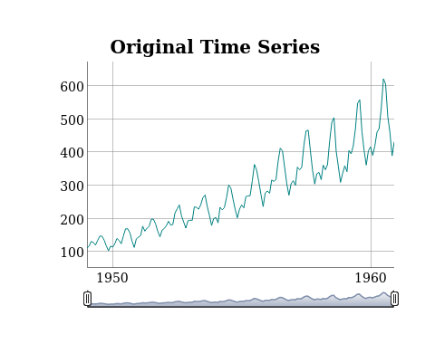

This package is an object oriented wrapper around the R Package RJDemetra, which performs time series adjustments with the java library JDemetra+
Installation
# install the package from GitHub
devtools::install_github("statistikat/persephone")
# optional: also install vignettes (needs prettydoc)
devtools::install_github("statistikat/persephone", build_vignettes = TRUE)Usage
Objects can be constructed with perX13 or perTramo. Subseqentually, the run method runs the model and output gives access to the output object from RJDemetra.
library(persephone)
obj <- perX13(AirPassengers)
plot(obj)
The original output from RJDemetra can be inspected via the output field.
obj$run()
obj$output$regarima
#> y = regression model + arima (0, 1, 0, 0, 1, 1)
#> Log-transformation: yes
#> Coefficients:
#> Estimate Std. Error
#> BTheta(1) -0.5007 0.081
#>
#> Estimate Std. Error
#> Monday -0.001527 0.004
#> Tuesday -0.007677 0.004
#> Wednesday -0.001125 0.004
#> Thursday -0.005350 0.004
#> Friday 0.004676 0.004
#> Saturday 0.003025 0.004
#> Easter [1] 0.017999 0.008
#> AO (5-1951) 0.109258 0.020
#>
#>
#> Residual standard error: 0.03006 on 131 degrees of freedom
#> Log likelihood = 271.5, aic = 947.6 aicc = 949.5, bic(corrected for length) = -6.674Further reading
More information can be found on the github-pages site for persephone.
- An overview of the package is available in the useR!2019 slides.
- The plotting vignette contains examples of interactive plots htat can be created with
persephone. - More information about hierarchical time series can be found in the hierarchical timeseries vignette.